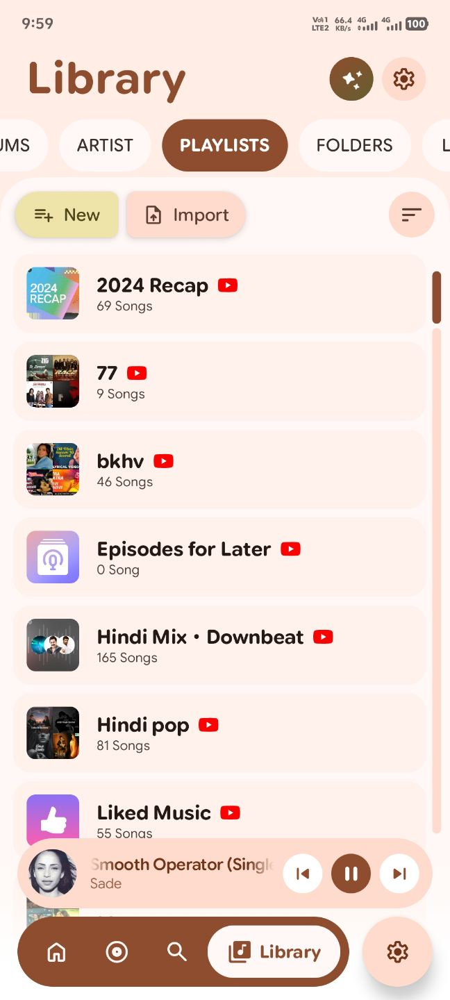

Music,
with intention.
A considered music player for people who care about sound, design, and the little details that make listening feel personal.


 NOW PLAYINGMade for the moment
NOW PLAYINGMade for the moment
Everything you need.
Nothing shouting for attention.
PixelMusic brings a modern, expressive Android interface to a serious music player. Album art shapes the atmosphere, controls stay close, and the experience is built to feel native rather than decorated.
Fast enough to forget the loading screen.
Direct streaming, adaptive quality, intelligent preloading and a dual-player architecture keep the next song close at hand.
Design that responds to your music.
Dynamic color, ambient artwork, fluid motion and tactile surfaces make the interface feel alive without becoming noisy.
getting started
Lyrics that keep time.
Synced lyrics, karaoke-style highlights, immersive typography and an AI rescue path when sources come up short.
From local files to your own server.
Downloads, embedded metadata, Android MediaStore, Subsonic-compatible servers, Jellyfin and streaming integrations live together in one library.
Designed for the
whole listening ritual.
Every screen is part of the same visual language — from your library to the lyrics, downloads and the little moments between songs.





“An open-source music player
built with its community.”
Built in the open.
Shaped by listening.
PixelMusic is an open-source Android music player focused on a high-quality everyday experience. It combines expressive Material design with serious playback, downloads, lyrics, cloud integrations and system-level Android features.
The project is developed by Saurav Biswas, with UI collaboration from @Xyg901, and builds upon and credits the open-source PixelPlayer project by Theo Vilardo.